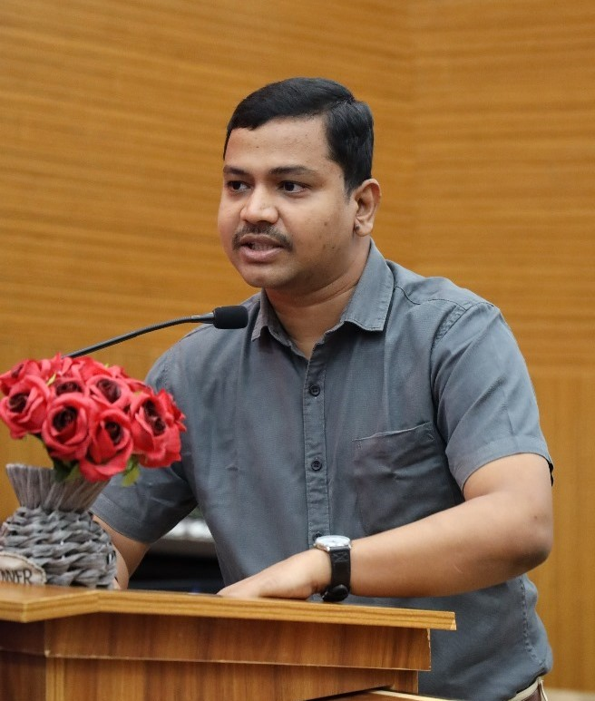

| Degree | University | Period |
|---|---|---|
| Doctor of Philosophy Ph.D. |
National Institute of Technology, Tiruchirappalli, Tamil Nadu, India | 2016 – 2020 |
| Master of Technology M.Tech. (CSE) |
Jawaharlal Nehru Technological University, Kakinada, Andhra Pradesh, India | 2008 – 2010 |
| Bachelor of Technology B.Tech. (CSE) |
Jawaharlal Nehru Technological University, Hyderabad, Andhra Pradesh, India | 2003 – 2007 |
| Role | Institute | Period | Duration |
|---|---|---|---|
| Assistant Professor | Indian Institute of Information Technology, Kottayam, Kerala (An Institute of National Importance) | July 2021 – till date | 5 Yrs |
| Assistant Professor | Gandhi Institute of Technology and Management (GITAM Deemed to be) University, Hyderabad. (NIRF: 71) | Aug. 2020 – July 2021 | 1 Yr. |
| Research Fellow | National Institute of Technology, Tiruchirappalli, Tamil Nadu, India. | Aug. 2016 – July 2020 | 4 Yrs. |
| Assistant Professor | Vignan's Foundation for Science, Technology & Research University, Guntur, Andhra Pradesh, India. (NIRF: 88) | Oct. 2010 – July 2016 | 5 Yrs. 10 Mon. |
| Assistant Professor | Vignan's Engineering College, Vadlamudi, Andhra Pradesh, India. | June 2007 – Sept. 2008 | 1 Yr. 3 Mon. |
| Title | Organizing Institute, Place | Period | Duration |
|---|---|---|---|
| Internal Hackathon as part of Smart India Hackathon – SIH’25 | Indian Institute of Information Technology Kottayam | September 22, 2025 | 1 Day |
| One-week FDP cum Workshop on Advanced Computer Vision for Image, Video and Applications | Indian Institute of Information Technology Kottayam | June 23 – 27, 2025 | 5 Days |
| Internal Hackathon as part of Smart India Hackathon – SIH’24 | Indian Institute of Information Technology Kottayam | September 19, 2024 | 1 Day |
| One-week FDP cum Workshop on Advanced Computer Vision for Image & Video Analysis and Applications | Indian Institute of Information Technology Kottayam | June 17 – 21, 2024 | 5 Days |
| Internal Hackathon as part of Smart India Hackathon – SIH’23 | Indian Institute of Information Technology Kottayam | September 21, 2023 | 1 Day |
| AI Driven IT Automation with AIOPS | Indian Institute of Information Technology Kottayam | July 23 – 24, 2022 | 2 Days |
| International Conference on Research in Engineering, Computers & Technology | National Institute of Technology, Tiruchirappalli, Tamil Nadu, India. | Sept. 8 – 10, 2016 | 3 Days |
| Workshop on "Apps Fluxus 2015" | VFSTR University, Guntur, Andhra Pradesh, India. | March 27 – 29, 2015 | 3 Days |
| Role | Journal / Conference Details |
|---|---|
| Session Chair | ICITIIT'26, Indian Institute of Information Technology Kottayam |
| Session Chair | ICITIIT'25, Indian Institute of Information Technology Kottayam |
| Session Chair | ICITIIT'24, Indian Institute of Information Technology Kottayam |
| Session Chair | ICITIIT'23, Indian Institute of Information Technology Kottayam |
| Reviewer – Journal | Signal, Image and Video Processing, Springer |
| Reviewer – Journal | Cognitive Neurodynamics, Springer |
| Reviewer – Journal | Multimedia Tools and Applications, Springer |
| Reviewer – Journal | Behaviour & Information Technology, Taylor & Francis |
| Reviewer – Journal | Sādhanā, Springer Nature |
| Reviewer – Journal | Cogent Engineering, Taylor & Francis Group, UK |
| Guest Editor | Special issue on "Advances in Cellular Automata Applications with Cryptography", American Journal of Neural Networks and Applications |
| Reviewer – Conference | 7th International Conference on Computer Vision and Image Processing (CVIP 2022), MNIT Nagpur |
| Reviewer – Conference | COMPSAC 2020 IT in Practice (ITiP) Symposium, Milan, Italy |
| Reviewer – Conference | TENCON 2019, Kochi, Kerala, October 17–20, 2019 |
| Title | Organizing Institute, Place | Period | Duration |
|---|---|---|---|
| AI to Vision: Basics to Latest Trends on ML and DL to Solve Real-World Problems, 15-Day Certification Program | Indian Institute of Information Technology Kottayam | May 18 – June 5, 2026 | 15 Days |
| Five-Day Online Faculty Development Programme on “Big Data Analytics and Security” | SRM University-AP | April 6 – 10, 2026 | 5 Days |
| One-week FDP cum Workshop on Advanced Computer Vision for Image & Video Analysis and Applications | Indian Institute of Information Technology Kottayam | June 17 – 21, 2025 | 5 Days |
| 5-Day FDP cum Workshop on Image Processing Using Python Programming | Indian Institute of Information Technology Kottayam | June 10 – 14, 2024 | 5 Days |
| Training programme as part of outreach activity on Web Designing | Indian Institute of Mass Communication, Kottayam | April 1, 2024 | 1 Day |
| Training programme as part of outreach activity on Web Designing | Indian Institute of Mass Communication, Kottayam | May 31, 2023 | 1 Day |
| Indo-Taiwan 2-Day Workshop on Intelligent Internet of Things | Indian Institute of Information Technology Kottayam | October 27 – 28, 2022 | 2 Days |
| SERB Sponsored Statistical Modelling & Computational Intelligence | National Institute of Technology, Tiruchirappalli | December 6 – 12, 2021 | 7 Days |
| FDP on "MATLAB Essentials" | VFSTR University, Guntur, Andhra Pradesh, India. | May 9 – 14, 2016 | 6 Days |
| Workshop on "IBM Worklight" | Chirala Engineering College, Chirala, Andhra Pradesh, India. | January 11 – 12, 2016 | 2 Days |
| Paper Title | Conference, Organizing Institute, Place | Period |
|---|---|---|
| Palm Vision: An Improved Disease Detection System in Coconut Plants using Deep Learning Techniques | 7th International Conference on Soft Computing and Signal Processing (ICSCSP-2024), Malla Reddy College of Engineering & Technology, Hyderabad, India | June 21–22, 2024 |
| Multi-Modal Emotion Recognition from Audio and Visual Data | 7th International Conference on Soft Computing and Signal Processing (ICSCSP-2024), Malla Reddy College of Engineering & Technology, Hyderabad, India | June 21–22, 2024 |
| Person Re-Identification and Path Tracking from Surveillance Cameras using Deep Learning | 7th International Conference on Soft Computing and Signal Processing (ICSCSP-2024), Malla Reddy College of Engineering & Technology, Hyderabad, India | June 21–22, 2024 |
| Presentation attack detection for multispectral face biometric system using federated learning | International Conference on Innovations and Advances in Cognitive Systems (ICIACS 2024), Builders Engineering College, Kangayam, Tamil Nadu, India | May 27–28, 2024 |
| A diagnosis model based on federated learning for lung cancer classification | International Conference on Science, Engineering Management and Information Technology (SEMIT 2023), Ankara, Turkey | Sept. 14–15, 2023 |
| Enhanced Brain Tumor Classification with Inception V3 and Xception Dual-Channel CNN | International Conference on Evolutionary Artificial Intelligence (ICEAI 2023), Taylor's University, Malaysia | Sept. 13–14, 2023 |
| Deep Learning-Based Classification of Lung Cancer Lesions in CT Scans: Comparative Analysis of CNN, VGG-16, and MobileNet Models | 4th International Conference on Image Processing and Capsule Networks (ICIPCN 2023), Tribhuvan University (Pulchowk Campus), Lalitpur, Nepal | Aug. 10–11, 2023 |
| Application of Deep Transfer Learning in Detection of Lung Cancer: A Systematic Survey | Emerging Technologies for Sustainable Development (OTCON 2.0), OP Jindal University, Raigarh, Chhattisgarh, India | Feb. 8–10, 2023 |
| Academic dishonesty detection using human pose estimation | 7th International Conference on Inventive Systems and Control (ICISC 2023), Coimbatore, India | Jan. 30–31, 2023 |
| A novel approach to FER using PCA, Gabor Wavelets and LBP | International Conference on Recent Trends in Automation, Vasireddy Venkatadri Institute of Technology, Guntur, Andhra Pradesh, India | Nov. 15–16, 2018 |
| Morphology based tense aspect disambiguation for sentences in Telugu to English translation | International Conference on Recent Trends in Automation, Vasireddy Venkatadri Institute of Technology, Guntur, Andhra Pradesh, India | Nov. 15–16, 2018 |
| Facial expression recognition using Geometric landmark points and convolutional neural networks | International Conference on Inventive Research in Computing Applications, RVS College of Engineering and Technology, Coimbatore, Tamil Nadu, India | July 11–12, 2018 |
| Facial expression recognition using Kirsch edge detection, LBP and Gabor Wavelets | International Conference on Intelligent Computing and Control Systems, Vaigai College of Engineering, Madurai, Tamil Nadu, India | June 14–15, 2018 |
| Boot Multiple Operating Systems using USB Disk | International Conference on Electronics and Communication Systems, Karpagam College of Engineering, Coimbatore, Tamil Nadu, India | Feb. 14–15, 2014 |
| Title | Organization, Place | Status | Scholar |
|---|---|---|---|
| Plant disease detection using Identification Model Improvement and Advancements in Deep Learning | IIIT Kottayam, Pala, Kerala (Co-Guide) | 2023 – 2026 Awarded | Dr. Ruchi Rani |
| Precision farming using AI and UAVs for disease detection and targeted application of pesticides | IIIT Kottayam, Pala, Kerala | Ongoing | Mr. Murali Krishna Nangedda |
| CapsNet-based Facial Emotion Recognition using Macro and Micro Expressions with Integrated Explainability to Reveal Genuine Emotions | IIIT Kottayam, Pala, Kerala | Ongoing | Ms. Jane George |
| Vision based techniques for enhanced navigation in autonomous vehicles | IIIT Kottayam, Pala, Kerala | Ongoing | Mr. Sreekumar O S |
| Title | Organization, Place | During | Student |
|---|---|---|---|
| A Transformer based Mental Wellness Assistant for Social Media to Combat Online Negativity | Indian Institute of Information Technology, Kottayam | Aug 2025 – May 2026 | Ms. Mythri G |
| Low Resolution Images to High Resolution Images | Indian Institute of Information Technology, Kottayam | Aug 2024 – May 2025 | Mr. Dheeraj Kumar Reddy |
| Skin Cancer Detection using MetaFormer on 3D-TBP Images | Indian Institute of Information Technology, Kottayam | Aug 2024 – May 2025 | Mr. Bhava Vyasa Hari |
| Power System Resilience: A Machine Learning Approach | Indian Institute of Information Technology, Kottayam | Aug 2023 – May 2024 | Mr. Gokul Govind |
| Convolutional Neural Network-Based Realtime Multiple Diseases Identification in Coconut Plants | Indian Institute of Information Technology, Kottayam | Aug 2023 – May 2024 | Mr. K S Sudheesh |
| Privacy preserving secure Biometric authentication using Blockchain and Federated Learning | Indian Institute of Information Technology, Kottayam | Jan 2023 – Dec 2023 | Mr. Manulal MP |
| Forecasting solar PV generation and irradiance using LSTM | Indian Institute of Information Technology, Kottayam | Jan 2023 – Dec 2023 | Mr. Renjithlal Parameswaran |
| A diagnosis model based on federated learning for Lung Cancer Classification | Indian Institute of Information Technology, Kottayam | July 2022 – May 2023 | Ms. Ann Mary Babu |
| Investigation of Certain Deep Learning Models for early Lung Cancer classification in Computed Tomography | Indian Institute of Information Technology, Kottayam | July 2022 – May 2023 | Mr. Hareesh P.M |
| Vision based realtime inventory update in warehouse | Indian Institute of Information Technology, Kottayam | July 2022 – May 2023 | Mr. Amit Dey |
| Analysis of web server log files using Hadoop MapReduce to preprocess the log files and to explore the session identification and network anomalies | VFSTR University, Guntur, Andhra Pradesh, India. | Nov. 2015 – May 2016 | Ms. Jaladi Udaya Santhi |
| Automated Security Audit of Infrastructure Cloud for AWS | VFSTR University, Guntur, Andhra Pradesh, India. | Nov. 2015 – May 2016 | Ms. Saranu Yeshasri |
| An Efficient Approach for Fingerprint Recognition by Matching Minutiae Pairings | VFSTR University, Guntur, Andhra Pradesh, India. | Nov. 2014 – May 2015 | Ms. Kotha Hari Chandana |
| Simulation of Image Encryption and Decryption using AES and RC4 Algorithms | VFSTR University, Guntur, Andhra Pradesh, India. | Nov. 2013 – May 2014 | Mr. N Ajay Kumar |
| Title | Organization, Place | During | Students |
|---|---|---|---|
| Phonology-Aware Cross-Lingual Adapter Transfer for Low-Resource ASR: Telugu and Santhali | Indian Institute of Information Technology, Kottayam | Aug. 2025 – April 2026 | Sabbi Prathima Sindhu Varshini Barnala Aditya Sri Ram Guvvala Karthik |
| Real-Time Driver Monitoring and Road Hazard Detection for Indian Roads | Indian Institute of Information Technology, Kottayam | Aug. 2025 – April 2026 | MD Sameer Pasha Ojasvi Gupta Akash Nair Ragipani Keshavi |
| Decentralized Machine Learning With Secure Multi-party Aggregation for Privacy-preserving Healthcare Systems | Indian Institute of Information Technology, Kottayam | Aug. 2024 – April 2025 | Kishan G Hemasaketh Harsh Anand Ujwal Kumar |
| Comparative Analysis on Automated Breast Cancer Detection Using ML/DL Models and Explainable AI | Indian Institute of Information Technology, Kottayam | Aug. 2024 – April 2025 | Harigovind P Pushpender Singh Shinde Aditya Mahesh Pal Abhishek Rajendrabhai |
| Multi-Modal Emotion Recognition from Audio and Visual Data | Indian Institute of Information Technology, Kottayam | Aug. 2023 – May 2024 | Eenadula Bhanuprakash Maridu Laasya Sri Guda Phanish Gotam Gorabh |
| Person Re-Identification and Path Tracking from Surveillance Cameras using Deep Learning | Indian Institute of Information Technology, Kottayam | Aug. 2023 – May 2024 | Kappaganthu Brahmarambhika Jyothy Chappidi Veera Nagendra Baranidaran M Vansh Jagyasi |
| A study on efficiency of transfer learning from joint training of InceptionV3 and Xception models on brain tumor classification | Indian Institute of Information Technology, Kottayam | Aug. 2022 – May 2023 | Vaisakh NP G Rithish Kumar Reddy K Sai Nruthik Sri Harsha |
| Academic Dishonesty Detection in Exams using Deep Learning Techniques | Indian Institute of Information Technology, Kottayam | Aug. 2021 – May 2022 | Dhanush Binu |
| Title | Organization, Place | During | Students |
|---|---|---|---|
| University Admission Process Automation | VFSTR University, Guntur, Andhra Pradesh, India. | Nov. 2011 – May 2012 | Desu Sathvik Dhulipalla Satya Sai Akshay Motamarri Chetan |
| Student Information System | VFSTR University, Guntur, Andhra Pradesh, India. | Nov. 2011 – May 2012 | Narisetti Karishma Paladugu Saranya Yarlagadda Chanti |
| Student Feedback System | VFSTR University, Guntur, Andhra Pradesh, India. | Nov. 2011 – May 2012 | Yarra Ramdasu Achala Ramu A. Venkata Naga Kailash |
| Academic and Emotional Progression of Student | VFSTR University, Guntur, Andhra Pradesh, India. | Nov. 2011 – May 2012 | Choppa Abhiram Kumar Dasari Venkata Avinash Gajula Leela Naga Devi |
| Faculty Assessment System | VFSTR University, Guntur, Andhra Pradesh, India. | Nov. 2011 – May 2012 | G. Siva Rama Krishna G. Dhanunjaya Lakshmi Jangala Sunny |
| University Examinations Automation | VFSTR University, Guntur, Andhra Pradesh, India. | Nov. 2011 – May 2012 | R. Sri Anjaneya Sai Swaroop Vadlamudi Sai Saketh Ram Dantu Pavan Kumar |
| Title | Organizing Institute, Place | Period | Duration |
|---|---|---|---|
| AICTE Training And Learning (ATAL) Academy Online FDP on "Data Sciences" | AICTE & GITAM University, Visakhapatnam | 4th – 8th Jan. 2021 | 5 Days |
| AICTE Training And Learning (ATAL) Academy Online FDP on "Cloud Technology" | AICTE & GITAM University, Visakhapatnam | 16th – 20th Nov. 2020 | 5 Days |
| One week FDP on “Deep Learning and its Applications” | Malla Reddy Engineering College, Maisammaguda, Secunderabad | 7th – 12th Dec. 2020 | 6 Days |
| MHRD Sponsored Workshop on “Cloud & Edge Computing for Big Data Analytics” | National Institute of Technology, Tiruchirappalli, Tamil Nadu, India. | 16th – 20th Dec. 2019 | 5 Days |
| One week FDP on “Advanced Deep Learning Techniques” | Electronics & ICT Academy, National Institute of Technology, Warangal, Telangana, India. | 13th – 18th May 2019 | 6 Days |
| Five Days FDP on “Deep Learning with TensorFlow & R Programming” | Kalasalingam Academy of Research & Education, Krishnankoil, Tamil Nadu, India | 11th – 15th Dec. 2018 | 5 Days |
| FDP on “Artificial Intelligence using Deep Learning & Machine Learning” | National Institute of Technology, Tiruchirappalli, Tamil Nadu, India. | 26th – 30th Nov. 2018 | 5 Days |
| Five Days Short term course on “Software Engineering” | National Institute of Technology, Tiruchirappalli, Tamil Nadu, India. | 27th Nov. – 1st Dec. 2017 | 5 Days |
| One Week International Workshop on “Machine Learning” | VFSTR University, Guntur, Andhra Pradesh, India. | 7th – 12th July 2014 | 6 Days |
| Five Days workshop on “Data Mining” | VFSTR University, Guntur, Andhra Pradesh, India. | 7th – 11th July 2012 | 5 Days |
| FDP on “Linux Internals” | VFSTR University, Guntur, Andhra Pradesh, India. | 27th – 29th April 2014 | 3 Days |
| Three Days Workshop on “Cloud Computing & Applications” | VFSTR University, Guntur, Andhra Pradesh, India. | 7th – 9th Mar. 2014 | 3 Days |
| Workshop on “Python Programming” | VFSTR University, Guntur, Andhra Pradesh, India. | 26th – 27th Feb. 2016 | 2 Days |
| Workshop on “Mobile Application Development” | VFSTR University, Guntur, Andhra Pradesh, India. | 22nd – 23rd Mar. 2014 | 2 Days |
| Two Days Workshop on “Cluster Computing with Linux” | Vignan’s Engineering College, Vadlamudi, Guntur, Andhra Pradesh, India. | 11th – 12th Aug. 2008 | 2 Days |
| Two Day National Workshop on “J2EE & Web Technologies” | Vignan’s Engineering College, Vadlamudi, Guntur, Andhra Pradesh, India. | 8th – 9th Sept. 2007 | 2 Days |
| Faculty Development & Training Program on Spoken Tutorial based Software Training | VFSTR University, Guntur, Andhra Pradesh, India. | 5th Dec. 2013 | 1 Day |
| Core | Programming | Research |
|---|---|---|
| Operating Systems Database Systems Computer Networks Software Engineering Design & Analysis of Algorithms |
Java Programming Web Technologies Python Programming Unix & Shell Programming C & C++ Machine Learning |
Digital Image Processing Artificial Neural Networks Data Mining Information Retrieval Systems |
Computer Vision · Machine Learning · Data Mining · Internet of Things · Big Data Analytics
| Dr. N. P. Gopalan | Dr. C. Mala | Dr. R. Mohan |
|---|---|---|
| Professor (HAG) (Retd.) & Research Supervisor Department of Computer Applications, National Institute of Technology, Tiruchirappalli. Tamilnadu – 620015. Email: npgopalan@nitt.edu, npgopalan@yahoo.com Phone: +91 9443416970 |
Professor & Co-Supervisor Department of Computer Science & Engineering, National Institute of Technology, Tiruchirappalli. Tamilnadu – 620015. Email: mala@nitt.edu, cmala123@gmail.com Phone: +91 9443559523 |
Assistant Professor Department of Computer Science & Engineering, National Institute of Technology, Tiruchirappalli. Tamilnadu – 620015. Email: rmohan@nitt.edu, rmohan.nitt@gmail.com Phone: +91 9442421326 |
| Personal Information | Address for Communication | Permanent Address |
|---|---|---|
| Name: Sivaiah Bellamkonda Gender: Male D.O.B: 27-05-1986 Religion: Hindu Nationality: Indian Languages Known: Telugu: Fluent English: Fluent Hindi: Medium Father’s Name: Sankara Rao Mother’s Name: Chilakamma Marital Status: Married |
Dr. Sivaiah Bellamkonda, Room No AA – 104, Assistant Professor, Computer Science & Engineering, Valavoor P.O., Pala, Kottayam-686635, Kerala, India. Land Line: +91-0482-2202170 Mobile Number: +91 8142274581 Email: sivaiah.bk@gmail.com, sivaiah78@gmail.com |
D. No. 11-1, Sangam Jagarlamudi Post, Tenali Mandal, Guntur - 522213, Andhra Pradesh, India. |
I hereby declare that all statements made in the application are true, complete and correct to the best of my knowledge and belief. In the event of any information being found false or incorrect at any point of time, my appointment may be cancelled without any notice.
Place: IIIT Kottayam
Date:
Dr. Sivaiah Bellamkonda